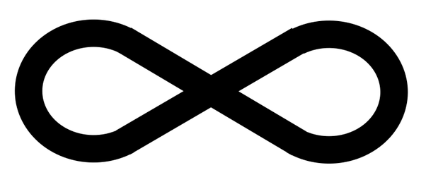
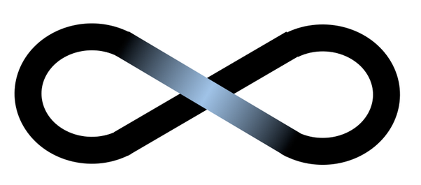
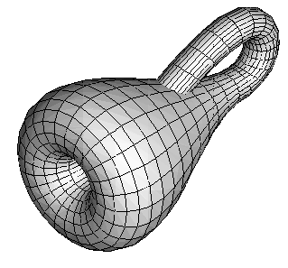
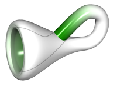
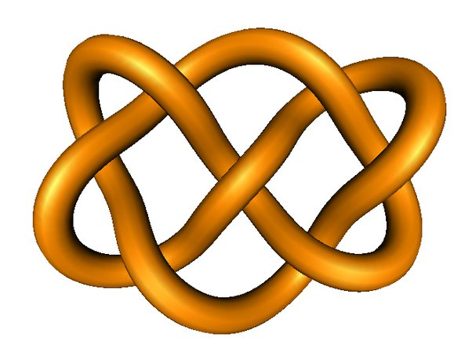

In an online lecture, a professor mentioned that Einstein could draw or imagine a 4-dimensional figure. How can one possibly do that?
Here's a 3-dimensional figure.
Right? Wrong. The knot is drawn on a flat screen, that of your phone or computer, so the image is decidedly 2-dimensional. However, it provides visual cues that help our imagination reconstruct the 3-dimensional shape. (In fact, each of our eyes sees in two dimensions anyway, and our brain pieces together the two images to create a model of the three-dimensional world around us. But this model is in our minds, not in the colorful patterns of light that hit our retinae).
In the same way that we can draw a 3-dimensional shape by projecting it onto two dimensions and completing the model with our imagination, we can create 3-dimensional models of 4-dimensional shapes that we train ourselves to imagine. In fact we can even draw those 3-dimensional models in 2 dimensions like we did before, and let our minds perform two dimensional leaps.
It takes some getting used to, but it's not impossible and many people develop a rather good intuition for four dimensions. I strongly encourage you to ignore the comment about Einstein having some special ability here (the original question referenced a talk where a professor mentioned Einstein could see in 4 dimensions). He was a superb mathematician and physicist with uncanny intuition and excellent technical mastery, but he did not have any special organ in his brain that let him draw or see in four dimensions.
Two common methods of visualizing the fourth dimension are to use color or time. In the color method, we draw a 3d shape as usual but paint it dark or bright depending on the value of the fourth coordinate. Dark points are "at the bottom" of the extra dimension, and light points are understood to be "at the top" of it. Two regions of your shape may occupy the same region in 3d space but have different colors, so they are actually separated in 4 dimensions.
To better understand this, let's start with a simple example in fewer dimensions. Here's a two dimensional shape, a figure 8 made of some ribbon.

Now suppose we wish to represent a 3-dimensional shape which is similar, except that the ribbon doesn't cross itself at the center; rather it is lifted "out of the page" to lie above the other ribbon. We can easily do this in three dimensional space, but let's stick to two dimensions and use color instead:

We are here using shades of blue as our extra dimension. The physical shape itself is still two-dimensional! The two ribbons are not spatially separated, they are only color-separated. The ribbon swings around and when it gets close to the center it is gradually "lifted up in blue-space", so that at the very center it lies far above (in the blue dimension) the black ribbon underneath. Then it glides back to black.
Note that we can't show the actual black ribbon alongside the blue ribbon since we can't apply two different colors, black and blue, to the same region in our 2d model. There's some imagination required here to understand that there are two crossing ribbons at the center, one black (at the "bottom" of the blue dimension) and one, blue, at the top.
Interestingly enough, the color dimension creates quite an intuitive visual feeling of a third dimension. But remember, the shape here is not spatially 3-d, it is "horizontal+vertical+color"-dimensional.
So now, we can do the exact same thing, starting with a genuine 3-dimensional shape and coloring it to add the fourth dimension. (In fact, using two independent colors like red and blue, we can actually visualize five dimensions quite effectively).
Consider a famous shape, the Klein bottle, which is a bottle that loops into itself to create a shape with no inside and outside. You can obtain it by gluing together two Möbius strips along their edge.

Sadly, we can't quite fit a Klein bottle in our 3-dimensional space, since it is not supposed to actually cut through itself. Like the ribbon above, the critical junction where it folds back in is meant to allow the two tubes to be completely separated.
But that's quite easy to achieve using color, right? Here's an example:

This uses the exact same approach as we had with the ribbon. The tube shifts into a different area in color space as it loops back in, and by the time it passes itself it is already very separated (green vs white). The Klein bottle sits very comfortably in 4-dimensional space, without any nasty self intersections.
Once you get this, it's quite easy to visualize and even discover or prove various facts about higher dimensions. For example, a knot in three dimensional space cannot be unknotted by moving it about:

But do you see how easy it is to untie it in 4 dimensions? Whenever you need to pass part of the knot through another part, just slide its color gradually from orange to blue, and now it can freely pass "through" any orange part since it is "colorfully" separated. Then glide it back to orange and keep going until the knot is untied. There are no 1-dimensional knots in 4 dimensions (but there are 2-dimensional ones).
See? That wasn't so hard. No need to be an Einstein.